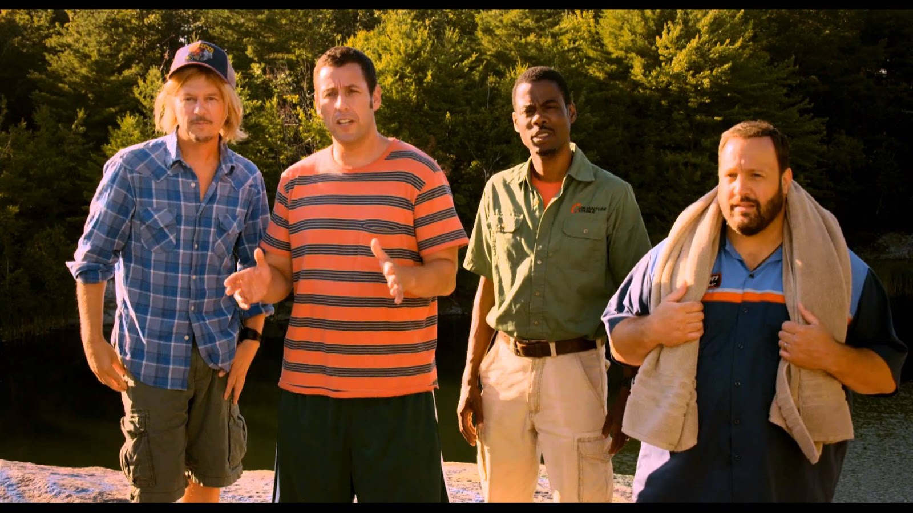

Mi nombre es CESAR LEONARDO
La pelicula que me gusta es la de son como niños
Es del año 2010
Dirigida por Dennis Dugan Escrita y producida por Adam Sandler
Comedia mediocre que cuenta la historia de cinco amigos adultos (Adam Sandler, Kevin James, Chris Rock, David Spade y Rob Schneider) que fueron miembros de un equipo de básquetbol cuando eran niños. Al enterarse de la muerte de su querido entrenador viajan con sus familias a su funeral. Después deciden pasar juntos un fin de semana en una cabaña en el bosque para convivir también con las esposas e hijos de los demás.
La califico con un 10
